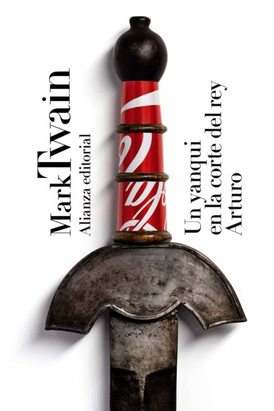
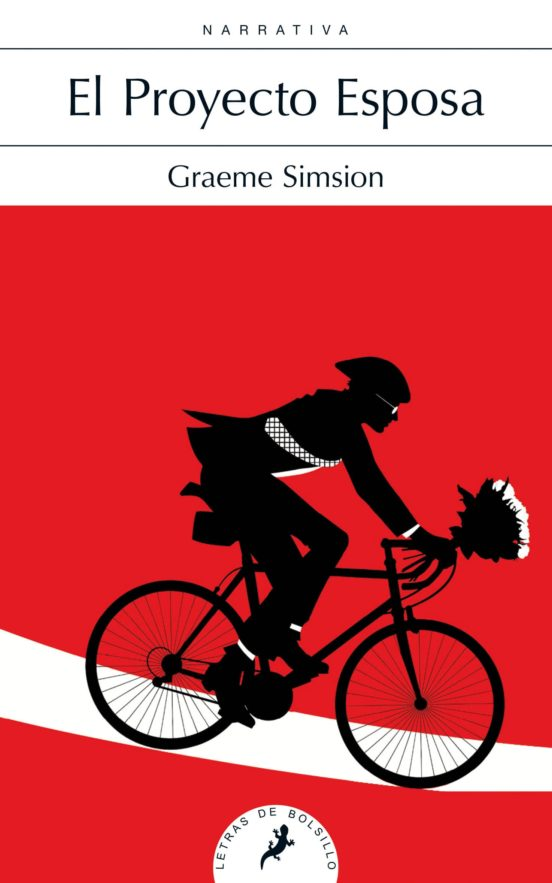

CATEGORÍA COMEDIA
-

UN YANQUI EN LA CORTE DEL REY ARTURO
MARK TWAIN
Reconocido unánimemente como fundador de la novela autóctona norteamericana, sobre todo a través de esas dos obras maestras que son Las aventuras de Tom Sawyer y Las aventuras de Huckleberry Finn, publicadas también en esta Biblioteca de autor, la vida y las numerosas actividades de Mark Twain (1835-1910) se solaparon en gran medida con los años decisivos de formación de los Estados Unidos
ver más -

NO CULPES AL KARMA DE LO QUE TE PASA POR GILIPOLLAS
LAURA NORTON
Si estás leyendo estas líneas es que te ha llamado la atención el título.¿Te gustaría decírselo a alguien?¿Serías capaz de decírtelo a ti mismo?Y lo más importante: ¿te gustaría mantener durante un buen rato la sonrisa que se te ha quedado en la cara? Pues esta es tu novela.Te podríamos contar con más o menos gracia de qué va la cosa, para que te hicieras una idea: que si la protagonista ...
ver más -
EL DIARIO DE BRIDGET JONES
HELEN FIELDING
Bridget Jones es un personaje icónico que dio origen a todo un género: una treintañera, soltera y de hábitos poco saludables que comienza a escribir un diario personal. En la primera página, detalla una lista de buenos propósitos para, según ella, convertirse en una mujer adulta y responsable preparada para encontrar a su príncipe azul. Pero, por mucho que Bridget se empeñe, en las peripecias del día ...
ver más -

GRAEME SIMSION
LAURA NORTON
«Me llamo Don Tillman, tengo treinta y nueve años y soy profesor adjunto de Genética en la Universidad de Melbourne. Mi trabajo está bien remunerado, me alimento de forma equilibrada y regular, y mi condición física es óptima. En el reino animal, no tendría ninguna dificultad para aparearme, pero en el humano, nunca he logrado tener una segunda cita con la misma mujer...
ver más